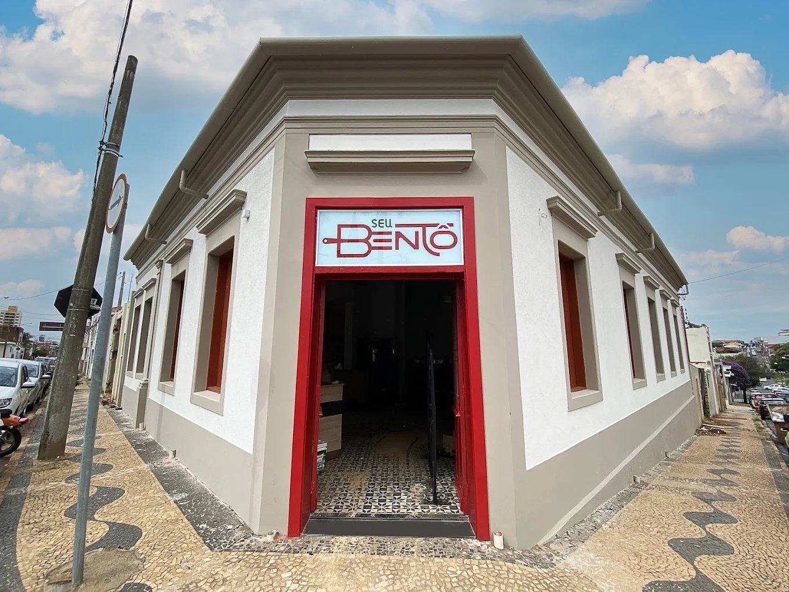

O Seu Bentô nasceu do sonho compartilhado entre uma advogada e um personal trainer apaixonado por culinária. Em dezembro de 2019, assumimos o desafio de empreender em um charmoso prédio de esquina, sem imaginar os testes de resiliência que viriam pela frente.
Nossa inauguração aconteceu em março de 2021, em plena pandemia. Logo no primeiro dia, fomos forçados a operar apenas por delivery e, na mesma noite, sofremos um assalto que destruiu nossa estrutura. O que parecia o fim virou nossa maior virada: a comoção e o apoio da cidade nos deram forças para reabrir em três dias. O carinho da comunidade transformou nosso delivery em um verdadeiro sucesso.
O nome Seu Bentô une duas grandes inspirações: o conceito do Bentô (a tradicional marmita japonesa com divisórias feita para compartilhar com quem amamos) e a proteção de uma medalha de São Bento que nos acompanhava no início de tudo.
Hoje, com o salão expandido e uma estrutura consolidada, nosso maior orgulho é acolher você e sua família, proporcionando momentos de alegria, afeto e muito sabor ao redor da mesa.
Seja bem-vindo à nossa família!